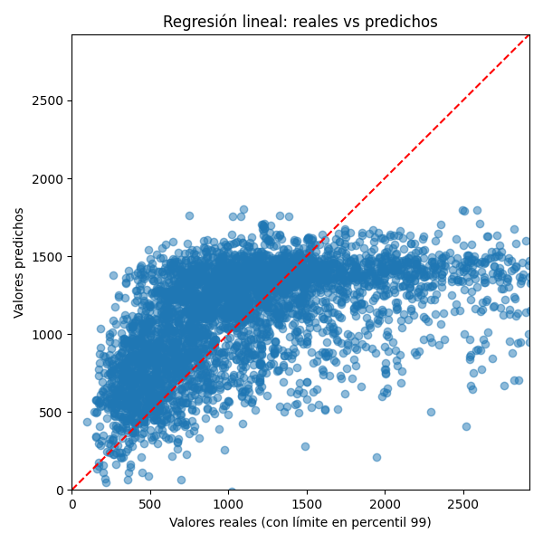
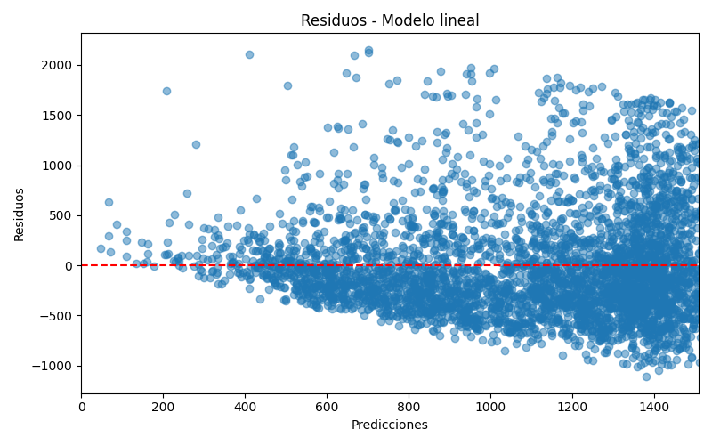
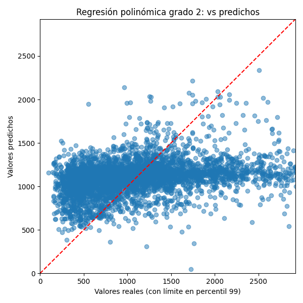
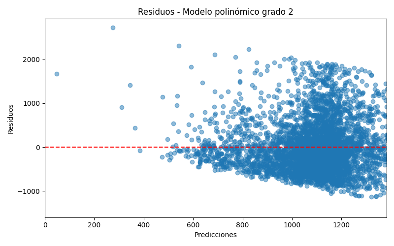

Objetivo
Estimar el precio por noche de listings de Airbnb en Ciudad de México con base en variables del alojamiento.
Análisis de 27,051 listings reales de Airbnb en Ciudad de México con regresión lineal, polinomial grado 1 y polinomial grado 2.
La versión web deja visibles los tres modelos solicitados para el proyecto. El modelo polinómico de grado 1 se comporta como una extensión lineal del modelo base, mientras que el de grado 2 introduce curvatura.
| Modelo | RMSE | R² | Nota |
|---|---|---|---|
| Regresión lineal múltiple | 377.1 | 0.6281 | Base |
| Regresión polinómica grado 1 | 377.1 | 0.6281 | Equivalente lineal |
| Regresión polinómica grado 2 | 465.5 | 0.4331 | Curva cuadrática |
Estimar el precio por noche de listings de Airbnb en Ciudad de México con base en variables del alojamiento.
Tipo de espacio, alcaldía, huéspedes, recámaras, camas, noches mínimas y disponibilidad anual.
Predicción del precio por noche y visualización del ajuste de los modelos sobre datos reales.
Se incluyen las gráficas usadas para documentar el comportamiento de cada regresión en la versión publicada.



